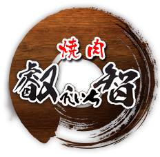

三宮で焼肉宴会・接待なら「叡智（えいち）」へ


ＪＲ三宮駅より徒歩5分に焼肉「叡智-えいち-」はございます。
お店でご用意するお肉はすべて、焼肉業界で経験を積んだ店主が一頭買いで仕入れたものを使用しております。
仕入れたお肉は部位ごとに切り出し、ご用意いたします。ハラミ、ロースなどの定番部位だけでなく、ミスジなどの良い質の希少部位もリーズナブルにご提供しております。
お肉には特製の醤油ダレ、味噌ダレを絡めてお召し上がり下さい。焼き物メニュー以外に、自家製ローストビーフや
定番の冷麺、ビビンバなどのお肉から〆までしっかりお楽しみ頂けます。
店内には２名様から最大16名様までご利用可能な個室・半個室をご用意しており、他のお客様を気にする事なく
ゆったりとお食事をお楽しみいただけます。デートや会社帰りのお食事から、大小各種ご宴会や、接待にも喜ばれております。
宴会コースには飲み放題オプションもございます。


〒650-0001 兵庫県神戸市中央区加納町4丁目8−19 北上ホテルB1
営業時間：18:00～翌2:00 （料理L.O.翌1:00／ドリンクL.O.翌1:30）
定休日：水曜
最寄り駅： JR三ノ宮駅徒歩5分
阪急神戸線三宮駅徒歩5分
阪神本線三宮駅徒歩7分